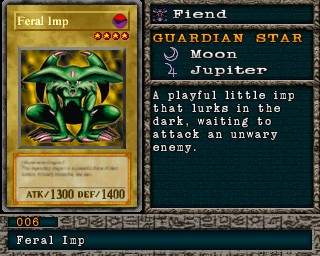

#006 · Monstro
Feral Imp
ATK1300
DEF1400
Nível4
TipoDemônio
AtributoDark
Guardian StarsLua / Júpiter
Senha41392891
Star Chips140
Quem dropa no Mod 13
| Duelista | Rank | Chance | Média | |
|---|---|---|---|---|
| B/C/D | 2,54% 52/2048 | 1 em 39 duelos | ||
| B/C/D | 2,44% 50/2048 | 1 em 41 duelos | ||
| S/A-TEC | 2,25% 46/2048 | 1 em 45 duelos | ||
| B/C/D | 2,25% 46/2048 | 1 em 45 duelos | ||
| S/A-POW | 2,20% 45/2048 | 1 em 46 duelos | ||
| S/A-POW | 2,15% 44/2048 | 1 em 47 duelos | ||
| S/A-POW | 2,15% 44/2048 | 1 em 47 duelos | ||
| S/A-TEC | 2,05% 42/2048 | 1 em 49 duelos | ||
| B/C/D | 1,95% 40/2048 | 1 em 51 duelos | ||
| B/C/D | 1,95% 40/2048 | 1 em 51 duelos | ||
| S/A-POW | 1,56% 32/2048 | 1 em 64 duelos | ||
| S/A-POW | 1,56% 32/2048 | 1 em 64 duelos | ||
| S/A-TEC | 1,56% 32/2048 | 1 em 64 duelos | ||
| B/C/D | 1,56% 32/2048 | 1 em 64 duelos | ||
| B/C/D | 1,46% 30/2048 | 1 em 68 duelos | ||
| S/A-TEC | 1,37% 28/2048 | 1 em 73 duelos | ||
| S/A-POW | 1,22% 25/2048 | 1 em 82 duelos | ||
| S/A-POW | 1,17% 24/2048 | 1 em 85 duelos | ||
| S/A-TEC | 0,78% 16/2048 | 1 em 128 duelos | ||
| S/A-POW | 0,59% 12/2048 | 1 em 171 duelos | ||
| S/A-TEC | 0,59% 12/2048 | 1 em 171 duelos | ||
| B/C/D | 0,59% 12/2048 | 1 em 171 duelos |
Quem dropa no jogo original
| Duelista | Rank | Chance | Média | |
|---|---|---|---|---|
| B/C/D | 2,54% 52/2048 | 1 em 39 duelos | ||
| B/C/D | 2,44% 50/2048 | 1 em 41 duelos | ||
| S/A-TEC | 2,25% 46/2048 | 1 em 45 duelos | ||
| B/C/D | 2,25% 46/2048 | 1 em 45 duelos | ||
| S/A-POW | 2,20% 45/2048 | 1 em 46 duelos | ||
| S/A-POW | 2,15% 44/2048 | 1 em 47 duelos | ||
| S/A-POW | 2,15% 44/2048 | 1 em 47 duelos | ||
| S/A-TEC | 2,05% 42/2048 | 1 em 49 duelos | ||
| B/C/D | 1,95% 40/2048 | 1 em 51 duelos | ||
| B/C/D | 1,95% 40/2048 | 1 em 51 duelos | ||
| S/A-POW | 1,56% 32/2048 | 1 em 64 duelos | ||
| S/A-POW | 1,56% 32/2048 | 1 em 64 duelos | ||
| S/A-TEC | 1,56% 32/2048 | 1 em 64 duelos | ||
| B/C/D | 1,56% 32/2048 | 1 em 64 duelos | ||
| B/C/D | 1,46% 30/2048 | 1 em 68 duelos | ||
| S/A-TEC | 1,37% 28/2048 | 1 em 73 duelos | ||
| S/A-POW | 1,22% 25/2048 | 1 em 82 duelos | ||
| S/A-POW | 1,17% 24/2048 | 1 em 85 duelos | ||
| S/A-TEC | 0,78% 16/2048 | 1 em 128 duelos | ||
| S/A-POW | 0,59% 12/2048 | 1 em 171 duelos | ||
| S/A-TEC | 0,59% 12/2048 | 1 em 171 duelos | ||
| B/C/D | 0,59% 12/2048 | 1 em 171 duelos |
A chance vale por duelo vencido com o rank indicado. "1 em N" é a média de duelos para conseguir a carta. S/A-POW = vitória por força; S/A-TEC = vitória técnica; B/C/D = ranks baixos.